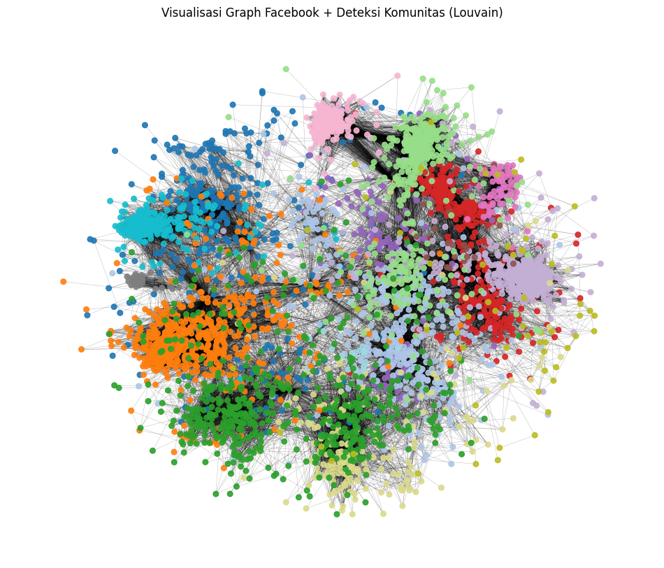
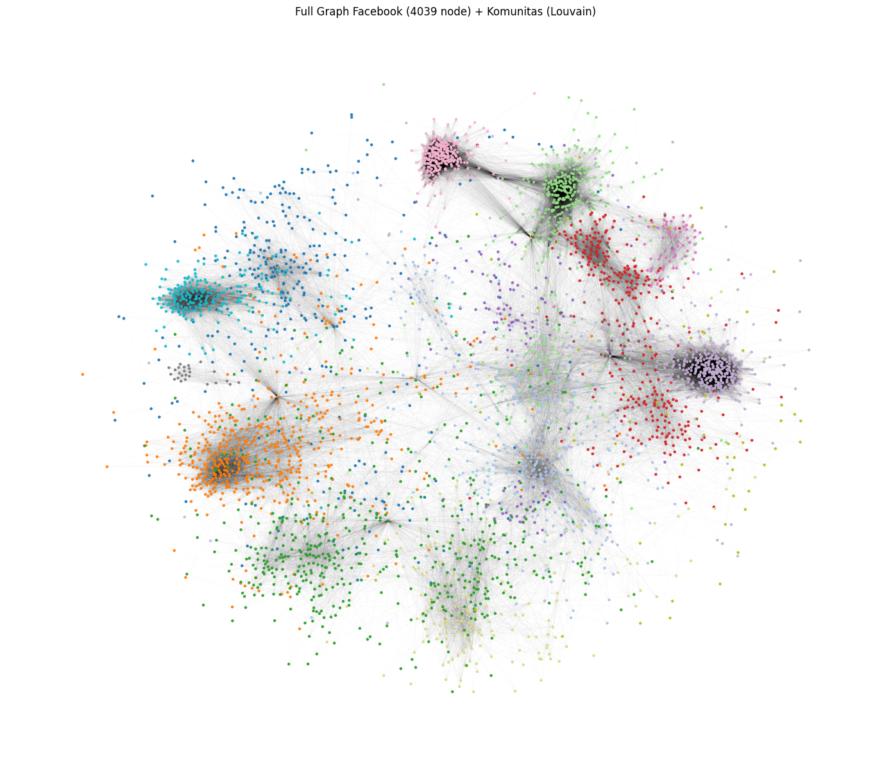

Tugas 7: DETEKSI KOMUNITAS FACEBOOK GRAPH (Algoritma Louvain)#
# %pip install python-louvain
import networkx as nx
import matplotlib.pyplot as plt
import matplotlib.cm as cm
from collections import Counter
from community import community_louvain
1. LOAD DATA GRAPH FACEBOOK#
FILE_PATH = "dataset/facebook_combined.txt"
# Graph tak berarah
G = nx.read_edgelist(
FILE_PATH,
nodetype=int, # node berupa integer (0,1,2, dst)
data=False # hanya ada edge, tidak ada atribut lain
)
print("Jumlah node :", G.number_of_nodes())
print("Jumlah edge :", G.number_of_edges())
Jumlah node : 4039
Jumlah edge : 88234
2. DETEKSI KOMUNITAS: LOUVAIN#
# partition adalah dictionary: {node: id_komunitas}
partition = community_louvain.best_partition(G)
# Tambahkan atribut komunitas ke setiap node (optional, tapi enak untuk analisis)
nx.set_node_attributes(G, partition, "community")
# Hitung modularitas
modularity_value = community_louvain.modularity(partition, G)
print("Modularity :", modularity_value)
# Hitung jumlah komunitas
community_ids = list(partition.values())
num_communities = len(set(community_ids))
print("Jumlah komunitas:", num_communities)
# Ukuran tiap komunitas
community_sizes = Counter(community_ids)
print("\nUkuran masing-masing komunitas (community_id: size):")
for cid, size in community_sizes.most_common():
print(f"Komunitas {cid}: {size} node")
Modularity : 0.8349363331330566
Jumlah komunitas: 16
Ukuran masing-masing komunitas (community_id: size):
Komunitas 3: 548 node
Komunitas 2: 541 node
Komunitas 7: 435 node
Komunitas 1: 432 node
Komunitas 4: 423 node
Komunitas 0: 344 node
Komunitas 5: 326 node
Komunitas 10: 237 node
Komunitas 14: 226 node
Komunitas 13: 206 node
Komunitas 6: 125 node
Komunitas 9: 73 node
Komunitas 12: 60 node
Komunitas 11: 25 node
Komunitas 15: 19 node
Komunitas 8: 19 node
3. VISUALISASI GRAPH (SUBGRAPH)#
# Ambil ID komunitas terbesar
largest_community_id, largest_size = community_sizes.most_common(1)[0]
print("\nKomunitas terbesar:", largest_community_id, "dengan", largest_size, "node")
# Ambil semua node yang termasuk komunitas terbesar
nodes_in_largest = [n for n, c in partition.items() if c == largest_community_id]
# Kalau terlalu besar, sampling beberapa saja, misalnya max 300 node
MAX_NODES_TO_DRAW = 4039
if len(nodes_in_largest) > MAX_NODES_TO_DRAW:
nodes_in_largest = nodes_in_largest[:MAX_NODES_TO_DRAW]
# Buat subgraph dari komunitas terbesar
H = G.subgraph(nodes_in_largest).copy()
print("Node di subgraph visualisasi:", H.number_of_nodes())
print("Edge di subgraph visualisasi:", H.number_of_edges())
# warna node berdasarkan ID komunitas (sebenarnya sama semua kalau hanya 1 komunitas,
# tapi kita bisa tetap pakai partition untuk generalisasi)
colors = [partition[n] for n in H.nodes()]
plt.figure(figsize=(10, 8))
pos = nx.spring_layout(H, seed=42, k=0.15) # layout force-directed
nx.draw_networkx_nodes(H, pos,
node_size=40,
node_color=colors,
cmap=plt.cm.tab20)
nx.draw_networkx_edges(H, pos,
alpha=0.3,
width=0.5)
plt.title(f"Visualisasi Subgraph Komunitas Terbesar (id={largest_community_id})")
plt.axis("off")
plt.tight_layout()
plt.show()
Komunitas terbesar: 3 dengan 548 node
Node di subgraph visualisasi: 548
Edge di subgraph visualisasi: 5356
import matplotlib.pyplot as plt
import networkx as nx
# --- Jika grafik terlalu besar, ambil sampel 500 node acak ---
MAX_NODES = 4039
if len(G.nodes()) > MAX_NODES:
print(f"Graph terlalu besar ({len(G.nodes())} node), sampling {MAX_NODES} node...")
nodes_sampled = list(G.nodes())[:MAX_NODES] # atau random.sample untuk acak
H = G.subgraph(nodes_sampled).copy()
else:
H = G
# Warna per node sesuai komunitas
node_colors = [partition[n] for n in H.nodes()]
plt.figure(figsize=(12, 10))
pos = nx.spring_layout(H, seed=42, k=0.15) # layout ala force-directed
nx.draw_networkx_nodes(
H,
pos,
node_size=30,
node_color=node_colors,
cmap=plt.cm.tab20,
alpha=0.9
)
nx.draw_networkx_edges(
H,
pos,
width=0.3,
alpha=0.3
)
plt.title("Visualisasi Graph Facebook + Deteksi Komunitas (Louvain)")
plt.axis("off")
plt.show()

# Warna node berdasarkan komunitas
node_colors = [partition[n] for n in G.nodes()]
plt.figure(figsize=(14, 12))
# layout 2D untuk semua node
pos = nx.spring_layout(G, seed=42, k=0.15) # ini yang mirip di PPT
# gambar node
nx.draw_networkx_nodes(
G,
pos,
node_size=5, # kecil banget biar nggak pecah
node_color=node_colors,
cmap=plt.cm.tab20,
alpha=0.9
)
# gambar edge
nx.draw_networkx_edges(
G,
pos,
width=0.1,
alpha=0.1
)
plt.title("Full Graph Facebook (4039 node) + Komunitas (Louvain)")
plt.axis("off")
plt.tight_layout()
plt.show()

import plotly.graph_objects as go
import networkx as nx
import community.community_louvain as community_louvain
# G dan partition diasumsikan sudah ada
# G = nx.read_edgelist("facebook_combined.txt", nodetype=int)
# partition = community_louvain.best_partition(G)
# Layout 2D
pos = nx.spring_layout(G, seed=42, k=0.15)
# Pisahkan koordinat node
Xn = []
Yn = []
Cn = [] # community id untuk warna
texts = []
for n in G.nodes():
x, y = pos[n]
Xn.append(x)
Yn.append(y)
Cn.append(partition[n])
texts.append(f"Node: {n}<br>Komunitas: {partition[n]}")
# Koordinat edge
Xe = []
Ye = []
for u, v in G.edges():
x0, y0 = pos[u]
x1, y1 = pos[v]
Xe += [x0, x1, None]
Ye += [y0, y1, None]
edge_trace = go.Scatter(
x=Xe,
y=Ye,
mode='lines',
line=dict(width=0.3),
hoverinfo='none',
opacity=0.2
)
node_trace = go.Scatter(
x=Xn,
y=Yn,
mode='markers',
marker=dict(
size=5,
color=Cn, # warna berdasarkan komunitas
colorscale='Turbo',
showscale=True,
colorbar=dict(title='Community'),
),
text=texts,
hoverinfo='text'
)
fig = go.Figure(data=[edge_trace, node_trace],
layout=go.Layout(
title="Interactive Graph Facebook + Komunitas (Louvain, 2D)",
showlegend=False,
hovermode='closest',
margin=dict(b=0,l=0,r=0,t=40),
xaxis=dict(showgrid=False, zeroline=False, showticklabels=False),
yaxis=dict(showgrid=False, zeroline=False, showticklabels=False),
))
fig.show()